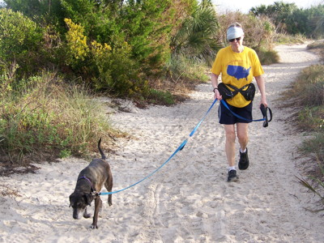
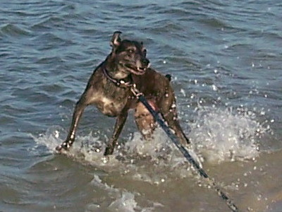
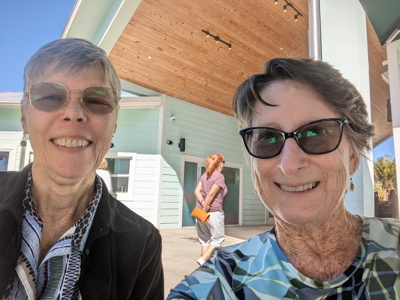
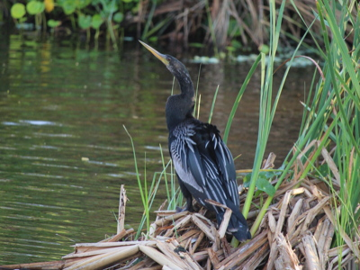
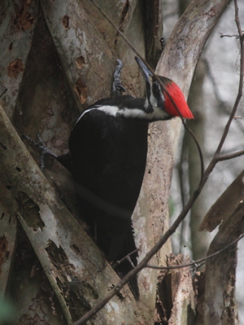
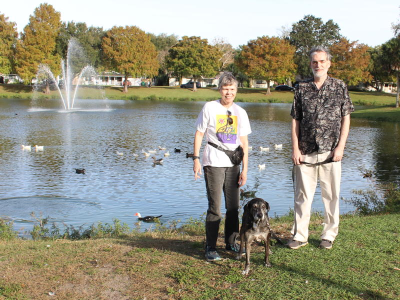

2023 Holiday Web Page

| Erich and Margie's 2023 Holiday Web Page | |
December Erich made icing from scratch for the first time. We won the trivia contest at Michael and Deborah's solstice party.
January We attended Bill & Judi's New Year's Day bocce pot luck. Margie had to leave early to walk the dog, but Erich teamed up with Patty and we won! Because of uncharacteristically cold weather (below freezing, rare for our area), we postponed our usual Christmas trip to the dog beach, and Pancho had a good time. Erich played games at Regina and Miguel's place. At Chick-fil-A, Margie ordered one packet of ranch dressing and received 9 of them. Margie and Missy did Lake Woodruff. After Erich doubled the stakes at backgammon, Bill immediately rolled 5 doubles in a row (and 3 more later in the game) to barely win. Erich watched seasons 1 and 2 of "Ozark". We competed in our annual mini-golf tournament, and got 3rd and 6th out of 10.
February After 25 years, Erich gave up the responsibility of updating his dynamic survey at the the Electronic Journal of Combinatorics, taking a on a co-author to do that for him. We celebrated Pancho's 11th birthday by Margie taking him to the dog beach instead of our usual movie. He did not seem impressed. We drove down to see Erin & Tom for a day, and Margie disappeared for a few hours to have lunch with her college roommate Alyn. Erich went over to Regina & Miguel's place for game night. On the day after Valentine's Day, Margie found a love letter in the park.
March Margie and Missy did Lake Woodruff again. Margie saw a Pileated Woodpecker in our yard. Erich struggled with chronic back pain for the entire month and lost 8 pounds. But he watched a lot of movies. We saw one of our favorite singer/songwriters, Brian Smalley, perform at the Deland Outdoor Art Festival.
April Erich started taking blood pressure medication. Erich watched the first 3 seasons of "For All Mankind", season 3 of "Star Trek - Picard", and season 3 of "The Mandalorian". Erich realized that 4 of the 9 last names of other couples living on our street begin with the letter "B", a 1/237 chance.
Sylvia Erich's friend Sylvia visited from Germany. We ate hamburgers watching skydivers land. We went to St. Augustine for a day, where we went to Fort Mantanzas, did a distillery tour, and listened to some live music. We walked the Black Bear Wilderness Trail and at Lake Beresford Park along the St. John's River. We visited the Pioneer Settlement in Barberville. We did dinner and shopping and dessert in Winter Park. We attended Joan's derby party, where we ate like kings and Erich won bocce. Sylvia tried deep dish pizza and various liqueurs for the first time.
May Erich watched the first 3 seasons of "Game of Thrones". Erich finally got over months of back pain.
June Erich watched season 3 of "Star Trek - Lower Decks", season 1 of "Star Trek - Strange New Worlds", season 4 of "Never Have I Ever", seasons 3 and 4 of "Ozark", and season 4 of "Game of Thrones". We replaced the larger of our two A/C units.
July Erich watched "The 7 Lives of Lea" and season 6 of "Black Mirror".
August We attended the opening of Judi's gallery show in Daytona.
Erich's holiday puzzles can be found here. You can see our archive of our previous holiday web pages here.
     